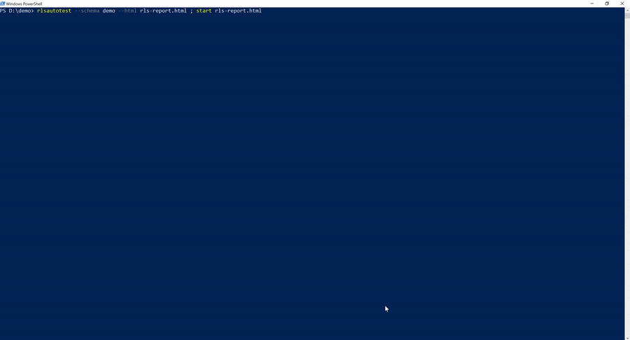

rlsautotest reads your Row-Level Security policies and auto-generates a native pgTAP suite - and the seed data - that proves, per table, per command, per identity, who can SELECT / INSERT / UPDATE / DELETE which rows. The RLS tests Supabase apps skip, automated.

In a Supabase app, Row-Level Security is what stands between a user and everyone else's data. Writing pgTAP tests for it by hand is hard - you fake identities, seed matching rows for every policy, and assert who can do what - so it gets skipped, and a missed policy ships as a data leak.
A generated test only proves something if the data behind it matches the policy and the identity. rlsautotest uses reverse-predicate seeding: it works backward from each policy to the exact rows and identities that satisfy (and violate) it - so "the owner can see their row" is checked against a row that's actually theirs, and "another tenant can't" against a real, different tenant.
For every table and command it proves what an owner, another user, another tenant, and anon can and cannot do.
Seeds two tenants and verifies one can't touch the other's rows - the core invariant of a multi-tenant app.
Never emits a false-passing test; an unprotected table fails CI through a built-in RLS-enabled guard.
Native pgTAP - runs with supabase test db, pg_prove, or plain
psql. Nothing to install on the database.
pip install rlsautotest
# quick check - write an access report, open it in your browser (nothing saved)
rlsautotest --db-url "$DATABASE_URL" --schema public --html rls-report.html
# or generate a pgTAP suite to commit and run in CI
rlsautotest --db-url "$DATABASE_URL" --schema public --emit supabase/